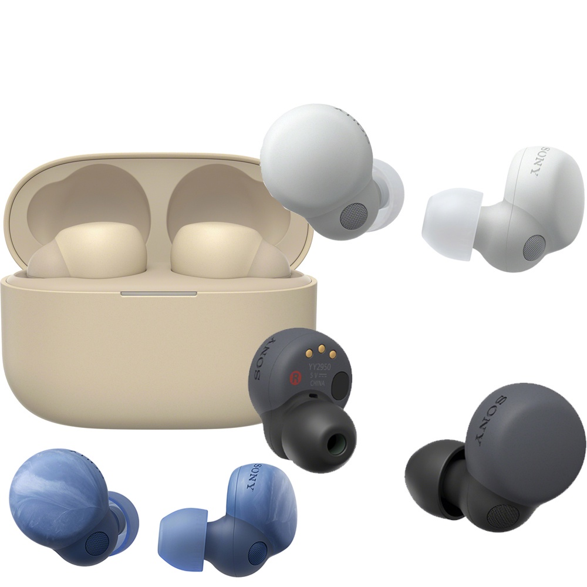
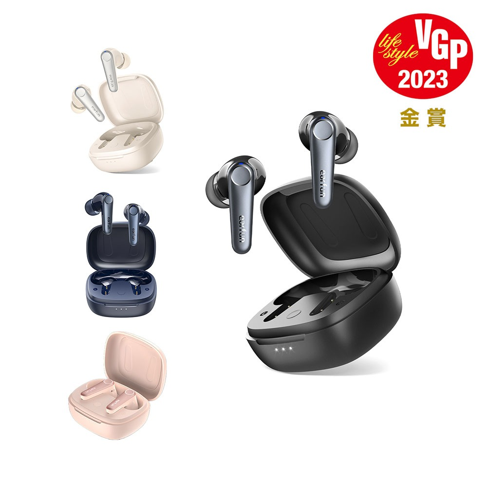
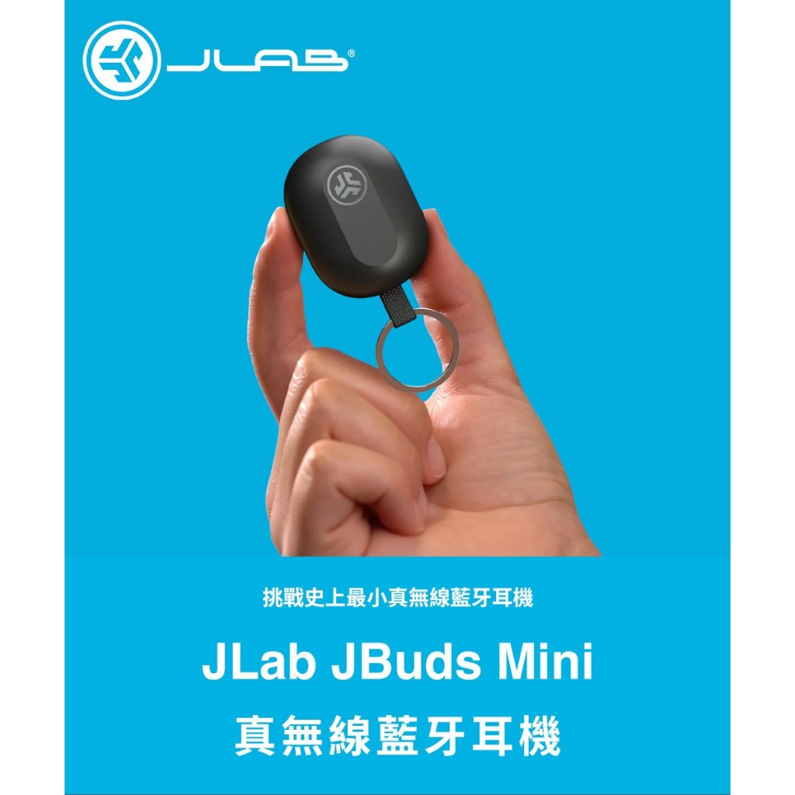

2024最新挑選-平價真無線藍芽無線耳機推薦|豪拜兒

在這喧囂繁忙的世界，不論你是一位通勤族、學生、上班族，抑或是一位忙碌的家庭主婦，每個人都該有屬於自己的寧靜時光。耳機不僅僅是一個音樂播放的工具，更是一扇窗戶，讓我們能逃離煩囂的外界，沉浸在自己喜愛的聲音之中。
在通勤的地鐵上，一雙耳機能夠讓你沉浸在音樂或播客中，忘卻車廂裡的喧囂；在圖書館或咖啡廳裡，耳機有助於專注學習或工作，創造屬於自己的專屬空間；在家中，一對舒適的耳機可以讓你享受私人音樂時刻，不打擾到家人。無論是專注學習、工作、休閒娛樂，一對好的耳機都能帶來享受美妙的音樂體驗。
因此，在選擇耳機時，不僅僅是為了追求音質的完美，更是為了找到一款能夠與我們生活緊密相連，滿足多樣化聆聽需求的產品。無論你是尋找耳機的新手，還是一位老手，希望這篇文章能夠幫助你更好地了解耳機世界，找到最適合自己的聲音。
以下我將先簡單分享幾個耳機常見的的技術名詞，並提供選購建議，讓大家在耳機的挑選時能更清楚自己的需求。
因為耳機可以是相當專業級的工具，3000台幣的以下的藍芽耳機被視為平價商品。這些耳機通常具有基本的藍牙功能，如音樂播放、通話等，但可能缺乏一些高端功能。儘管如此，這個價位範圍內仍然可以找到一些性價比較高的產品，特別是一些知名品牌的入門款式。
本篇會著重於平價藍芽耳機的推薦，同時也精心挑選幾位賣家，有著相對低的價格與不錯的銷量。如果對某個商品感興趣，可以直接點擊連結購買。也提醒以下價格為推薦當下的價格，實際價格以賣場公告為準。
常見的的技術名詞
這些技術名詞可能會影響耳機的選擇和使用體驗，了解這些名詞可以幫助更好地理解產品的性能和功能。
專利技術
- ACAA™ 3.0 同軸動圈：ACAA™ 是某個品牌專利的音訊技術，3.0 同軸動圈可能是該技術的一個版本或者是針對該技術的一個特定升級。同軸動圈通常是指耳機的驅動單元，而 ACAA™ 可能是指該品牌開發的一種特殊的驅動單元設計或技術。
- Hybrid 降噪技術：Hybrid 降噪技術是指結合了多種降噪技術的耳機，例如主動降噪和被動降噪。主動降噪是通過發出反噪聲來抵消外界噪音，而被動降噪則是通過耳機本身的結構和材料來隔離噪音。Hybrid 降噪技術結合了這兩種方法，以實現更好的降噪效果。
- ANC：Active Noise Cancellation，主動降噪技術，通過發出與環境噪音相反的聲波，以抵消或減少外界噪音的干擾，提供更好的聽覺體驗。
- DSEE Extreme：是一種音頻處理技術，用於提高音樂品質，通常通過增強低質量音訊的清晰度和動態範圍來改進聽覺體驗。
- LDAC 高解析音質：LDAC 是一種由索尼開發的藍牙音頻編解碼技術，可以實現高解析度的音頻傳輸，提供更高品質的音樂體驗。LDAC 能夠在藍牙傳輸中提供更高的比特率，從而實現更高的音質。
- aptX：由高通（Qualcomm）開發的一種藍牙音訊編解碼技術，旨在提供更高質量的音訊傳輸，提升音質。
- AAC：Advanced Audio Coding，是一種音訊編碼格式，通常用於 iOS 設備。支援 AAC 編碼的藍牙耳機可以提供更好的音質。
- 藍牙的版本：藍牙的版本通常是用數字來表示的，例如藍牙 4.0、藍牙 5.0 等。藍牙的版本不同，代表著支援的功能和性能也會有所不同。通常情況下，較新的版本會支援更高的數據傳輸速率、更穩定的連接、更低的能耗等特性。你可以在產品的規格或說明中查看藍牙的版本信息。
- LE Audio 技術：一種新型的藍牙音頻技術，其中的LE代表低能耗，它旨在提供更高品質、更穩定的音頻傳輸，同時降低能耗，從而延長設備的電池壽命。
- QuietSmart 2.0： 是一種混合式主動降噪技術，結合了多種降噪技術，旨在提供更出色的降噪效果，並且可能包括智能環境感知、多通道降噪和自適應降噪等功能。
特殊功能
- Transparent Mode 通透模式：部分主動降噪耳機擁有的一種功能，可以讓外界聲音透過耳機，讓使用者在需要聽取外界聲音時能夠聽到周圍環境的聲音。
- IPX 等級：用於描述耳機的防水等級，例如 IPX4、IPX5 等，這些代表了耳機對水的抵抗能力，從防水到防汗等不同級別。
- Hi-Res Audio：高解析度音頻，是一個由日本 Audio Association 定義的音訊標準，要求音頻的取樣率至少在 96 kHz/24-bit 或更高，以實現更高品質的音樂體驗。
- 封閉式耳機：會封閉耳朵周圍的聲音，提供更好的隔音效果。
- 動態耳機：指使用動態驅動器（單體）的耳機，這是一種常見的耳機類型。驅動單體是耳機中負責產生聲音的元件，通常是一個小型揚聲器，這裡指的是驅動單體的直徑大小為5毫米。
- 主動式降噪：是指耳機或耳塞中內建的技術，它可以採集環境噪音，並生成與之相反的聲波，從而消除或減少外界噪音對聽覺的影響。被動式降噪是指耳機或耳塞本身的設計和材料能夠在一定程度上阻隔外界噪音，而不需要使用電子設備或處理器來生成相反的聲波。被動式降噪通常是通過密封性較好的耳罩或耳塞來實現。
- 動鐵（Balanced Armature）：動鐵驅動器使用一個或多個平衡臂，這些臂上附有一個小型的磁鐵和線圈。當電流通過線圈時，它會在磁場中產生力量，導致平衡臂振動，從而產生聲音。動鐵驅動器通常比動圈驅動器更小巧，更能提供高頻的細節和精確度。動鐵驅動器通常更適合用於高頻的細節和中高音的表現。
- 動圈（Dynamic Driver）：動圈驅動器是較為常見的驅動技術之一，它包括一個磁鐵和一個與之連接的振膜（也稱為圈膜）。當電流通過線圈時，它會產生一個磁場，使得振膜振動，從而產生聲音。動圈驅動器通常具有較好的低頻響應和動態範圍。動圈驅動器則較適合用於低音的呈現。
真藍芽耳機
「真藍芽耳機」是一個行銷術語，通常用來指代支援真正無線藍牙技術的耳機。真藍芽耳機是指具有藍牙技術的無線耳機，它們可以與智慧手機、平板電腦或其他藍牙設備配對，以便播放音樂、接聽電話或其他聲音相關的功能。
這個術語的「真」通常是指這些耳機採用了藍牙技術的最新標準，可能包括藍牙5.0或更新的版本。這些新版本的藍牙技術通常提供更好的連接穩定性、更低的能耗以及更快的數據傳輸速度，使得使用者可以更好地享受無線音訊體驗。
至於「假藍芽耳機」，這個詞彙通常是指那些聲稱支援藍牙技術但實際上並不是真正的藍牙耳機，而是通過其他方式來連接設備的耳機，比如使用無線接收器或者線材。這些耳機通常不具備真正的藍牙功能，可能會有連接不穩定、音質較差等問題。
選購指南
那麼多的專有名詞, 是不是讓人感到頭暈目眩，以下將非常簡潔的針對各使用族群，提供重點的選購要點：
-
喜歡聽重低音的人： 尋找具有「低音增強器」或「深度低音技術」的耳機，以獲得更豐富的低音效果。 考慮選購擁有「動態驅動單體」或「封閉式耳機」，這些耳機通常能夠提供更強勁的低音表現。
-
需要耳機用於運動的人： 選擇具有「防汗防水功能」的耳機，以確保在運動時耳機不受損。 優先考慮具有「輕量化設計」和「耳朵固定功能」的耳機，以確保在運動過程中的穩定性和舒適度。
-
對音質要求較高的音樂愛好者： 尋找具有「高解析度音質認證」或「專業音樂品牌認證」的耳機，以確保高品質音樂體驗。 考慮選購具有「主動降噪技術」或「高解析度音頻技術」的耳機，以提供更純粹、更清晰的音質。
-
需要長時間佩戴的人： 尋找具有「舒適耳罩」和「輕便設計」的耳機，以減輕長時間佩戴的不適感。 考慮選購具有「低壓耳罩」和「通風孔設計」的耳機，以提供更好的透氣性和舒適度。
-
需要無線耳機的人： 尋找具有「藍牙5.0或更高版本」的耳機，以確保穩定的連接和更低的功耗。 考慮選購具有「長電池壽命」和「快速充電功能」的無線耳機，以確保長時間使用時的便利性。
-
需要用耳機進行會議的人： 選擇具有降噪麥克風或清晰語音捕捉功能的耳機，以提供清晰、無干擾的語音通話體驗。確保耳機具有穩定的無線連接功能，以避免通話中斷或信號不穩定的情況發生。並且選擇具有方便易用的控制按鍵或觸控面板的耳機，以方便在會議中進行音量調整、通話控制等操作。
5款平價藍芽耳機推薦
- SONY WF-LS900N LinkBuds S 真無線藍牙耳機
- EarFun Air Pro 3 降噪真無線藍牙耳機
- JLab JBuds Mini 真無線藍牙耳機(挑戰史上最小耳機)
- 鐵三角 ATH-SQ1TW2 真無線耳機 真無線藍牙耳機
- Samsung Galaxy Buds2 真無線藍牙耳機
產品特色
SONY WF-LS900N LinkBuds S 真無線藍牙耳機

這款耳機特別適合那些對音質要求較高的音樂愛好者，可以享受到高解析的無線音樂體驗。同時，長時間佩戴也不會感到不適，因為它的輕巧設計貼合耳型。此外，對於需要在嘈雜環境中保持通話清晰的人來說，它的主動式降噪模式能夠抑制風噪，提供更清晰的通話體驗。
特色：
- 自然環境音功能：無縫切換到外界聲音，保持通話暢順。
- 主動式降噪模式：抑制風噪，提供更清晰的音樂體驗。
- LDAC 及 DSEE Extreme 功能：支持高解析音質，享受無線音樂的高保真。
- 輕巧設計：單耳僅重 4.8g，貼合耳型，長時間佩戴也舒適。
- AI 技術與拾音技術：提升通話品質，確保清晰、流暢的通話體驗。
規格
- 藍牙版本：藍牙規格 5.2 版
- 音源編碼：SBC、AAC、LDAC、LC3
- 防水等級：符合 IPX4
- 最高頻率響應：20000Hz
- 音樂連續播放時間：最長 6 小時 (降噪功能開啟) / 最長 9 小時 (降噪功能關閉)
- 連續通訊時間：最長 3.5 小時 (降噪功能開啟) / 最長 3.5 小時 (降噪功能關閉)
- 待機時間：最長 8.5 小時 (降噪功能開啟) / 最長 16 小時 (降噪功能關閉)
價格：$3,999
購買連結：點我購買
EarFun Air Pro 3 降噪真無線藍牙耳機

此款耳機有卓越的音質與降噪效果，結合 LE Audio 技術和 QuietSmart 2.0 混合主動降噪。且多功能設計，包含通透模式、遊戲模式、個性化設定等多種功能，滿足不同場景的需求。搭載藍牙5.3技術確保穩定的連接，長效續航與快速充電功能，符合人體工學設計，輕巧舒適，長時間佩戴也不感到不適。
特色：
-
全球首款 LE Audio 降噪真無線耳機：EarFun Air Pro 3 引領潮流，搭載最新 LE Audio 技術，帶來卓越的降噪效果。
-
榮獲 2023 日本VGP金賞：旗艦規格獲得日本VGP金賞的肯定，堅實品質保證。
-
次世代音頻解碼：搭載 LC3 音頻解碼技術，呈現更細緻的音樂細節。
-
藍牙5.3技術：超低功耗、穩定傳輸。
-
EarFun App個性化設定：透過 EarFun App，根據個人喜好客製化聆聽體驗。
-
主動降噪技術：ANC自適應主動降噪，隔絕外界噪音，。
-
多點連線：無縫自由切換兩個設備，方便日常使用。
-
QuietSmart 2.0混合主動降噪：獨家技術提供更優質的降噪效果。
-
通透模式：一鍵切換，即可聆聽周遭環境音，保持與外界的連結。
-
沉浸式環繞音效：搭載11mm羊毛複合單體，享受身臨其境的音樂體驗。
-
極低延遲遊戲模式：55ms極低延遲，提供更流暢的遊戲和影片體驗。
-
通話品質保證：增強型6麥克風陣列搭配cVc 8.0技術，清晰無擾的通話品質。
-
長效續航：單次電量9小時，搭充電盒可達45小時，長時間的音樂享受。
-
快速充電：僅需快充10分鐘，即可使用2小時，支援無線充電。
規格：
- 驅動單體：11mm 羊毛複合驅動單體
- 藍牙版本：5.3 (高通 QCC3071 晶片)
- 音源編碼：aptX Adaptive、LC3、AAC、SBC
- 防水等級：IPX 5
- 播放時間：7小時 (開啟ANC) / 9小時 (關閉ANC) / 充電盒額外36小時 (因音量大小和音頻內容而異)
- 充電時間：快充10分鐘可用2小時 / 無線充電充滿需3.5小時
- 充電方式：USB-C / 無線充電 價格：$2,533
購買連結：點我購買
JLab JBuds Mini 真無線藍牙耳機(挑戰史上最小耳機)

這款耳機具有知名品牌背書，保證品質可靠。其小巧的設計使它極為方便攜帶，甚至可掛在鑰匙圈上。具備多點連線功能，讓使用者無需手動切換設備，提升了使用的便利性。透過App設定，可以個性化控制各種功能。此外，耳機還具了通透模式、通話降噪功能、IP55防水等級等多種功能，並載藍牙5.3技術，保證連接穩定。
特色：
- 知名品牌：JLab是美國知名耳機大廠品牌，品質有保證。
- 最小耳機：挑戰全球最小耳機設計，可掛鑰匙圈，兼具便攜性和美觀性。
- 輕鬆切換：無需手動自由切換兩個設備，提高使用效率。
- App設定：App可設定EQ音場、觸控控制、音量：客製化聆聽體驗。
- 通透模式：Be Aware 通透模式支援環境音調整，在聽音樂的同時保持對周圍環境的感知。
- 防水功能：IP55等級，防水舒適、耐用度提升。
- 可聽音樂+通話：多功能性，滿足不同需求。
- 通話清晰：有效消除環境噪音，確保通話清晰。
- 流暢使用：搭載藍芽5.3與最新晶片連線快速穩定，使用順暢不卡關藍牙。
- 優異被動降噪：配備多尺寸耳塞，提供舒適的佩戴體驗，降低外界噪音干擾。
- Fast Pair 功能：能與Android裝置快速連接，提升使用效率。
- 靈活使用：左右皆可單耳使用+雙耳使用。
規格：
- 單體尺寸：6mm動圈單體
- 藍牙版本：藍牙 5.3
- 音頻解碼：SBC
- 響應範圍：20Hz - 20KHz
- 充電接頭：USB - C
- 輸出： 101+/-3dB
- 麥克風：MEMS (耳機) -38dB +/- 1dB
- 電量：5.5小時(單耳)/總播放時間約20小時以上 (耳機+充電盒)
- 充電時間：約1.5小時；快充15分鐘可使用1小時
- 充電盒充電時間：2小時
- 防水等級：IP55 ( 防塵防水 )
價格：$1,280
購買連結：點我購買
鐵三角 ATH-SQ1TW2 真無線耳機 真無線藍牙耳機

這款耳機具備無線充電功能、安全觸摸面板鎖定系統、IPX5防水等級、Fast Pair等優異的功能，且附帶多種尺寸的耳塞，確保舒適貼合，可以長時間戴著而不感到不適。
特色：
- 充電盒支援無線Qi充電功能：方便快捷的無線充電方式。
- 專門設計Ø5.8mm高解析驅動單元：渾厚低音至具延展性的中高音，不論是音樂、影片、遊戲，從人聲到樂器聲，都能輕易享受。
- 防誤觸：觸摸面板鎖定系統，避免誤觸而造成的不便。
- 多尺寸耳塞：內附4種尺寸耳塞，讓每個人都能找到合適的尺寸。
- 防水性能：IPX5防水性能，適合運動、戶外等多種環境使用。
- Fast Pair 功能：能與Android裝置快速連接，提升使用效率。
- 專用App「Connect」：提供更多的使用功能和個性化設定。
- EQ等化器：4種預設EQ等化器，不同的聲音風格，滿足不同聆聽需求。
- 環境音功能：搭載可隨時注意周遭的環境音功能，在聆聽音樂的同時保持對周圍環境的感知。
- 多重配對功能：可同時配對兩組設備。
- 定時提醒功能：解決手機靜音的個人定時提醒功能。
- 單耳功能：不論單耳或雙耳使用，通話品質始終保持清晰。
- 低延遲：低延遲模式讓聲音及影像更為同步，提供更優質的音頻和視頻體驗。
- 支援語音助理：支援Siri與Google Assistant語音助理。
規格：
- 通訊方式: Bluetooth 標準規格Ver.5.2
- 通訊使用頻段: 2.402GHz～2.480GHz
- 通訊距離: 視線良好範圍約10m以內
- 支援編碼: SBC
- 充電時間: 耳機約2.5小時，充電盒約2小時（依據使用條件而異）
- 播放時間：耳機充滿電的情況下，耳機可連續播放6.5小時，搭配充電盒使用可達20小時。
- 防水等級: IPX5
- 重量: 耳機：約4g；充電盒：約43g
價格：$2,800
購買連結：點我購買
Samsung Galaxy Buds2 真無線藍牙耳機

此款三星耳機有先進的藍牙技術和多種模式，提供更優質的音樂和通話體驗。且具備防潑濺、觸控手勢操作、免持通話功能功能，更適合日常生活使用。持久的電池續航和多種充電方式與 Galaxy Wearable App個性化設定，也滿足了更多樣性的需求。
特色：
- 先進藍牙技術：搭載藍牙5.2技術，提供更快速、穩定的連接體驗。
- IPX2防潑濺保護：具備防潑濺功能。
- 觸控手勢操作：透過觸控手勢輕鬆控制音樂、通話等功能，操作更加便捷。
- 免持通話：支援免持通話功能，可以自由通話而無需手持設備。
- 多種模式：包括主動降噪、環境音模式和通話降噪。
- Galaxy Wearable App：通過Galaxy Wearable App進行更多的個性化設定和功能操作。
- 多種功能：EQ等化器、朗讀通知、Bixby語音喚醒、尋找耳機、遊戲模式等滿足不同使用需求。
- 持久電池續航：單次充電可連續播放音樂7.5小時（關閉主動降噪），搭配充電盒最高可達29小時的電量續航。
- 多種充電方式：充電盒支援USB Type-C規格和Qi無線充電協議，充電更加方便。
- 輕巧便攜：耳機尺寸小巧，重量輕，方便攜帶，隨時隨地享受音樂。
價格：$2,890
購買連結：點我購買
比較表
產品規格與特色
| 產品名稱 | 價錢 | 特色 | 規格 | 購買連結 |
|---|---|---|---|---|
| SONY WF-LS900N LinkBuds S 真無線藍牙耳機 | $3,999 | - 主動式降噪模式- LDAC 及 DSEE Extreme 功能- 輕巧設計- AI 技術與拾音技術 | - 連接類型：無線藍牙- 耳機類型：入耳式- 最高頻率響應：20000Hz- 阻抗：16Ohms | 點我購買 |
| EarFun Air Pro 3 降噪真無線藍牙耳機 | $2,533 | - LE Audio 技術- QuietSmart 2.0 混合主動降噪- EQ等化器- 通透模式- 快速充電 | - 驅動單體：11mm- 藍牙版本：5.3- 防水等級：IPX 5- 播放時間：7小時(開啟ANC) / 9小時(關閉ANC) / 充電盒額外36小時 | 點我購買 |
| JLab JBuds Mini 真無線藍牙耳機(挑戰史上最小耳機) | $1,280 | - 挑戰史上最小耳機- 知名品牌- 快速連接功能- App設定- 通透模式- 防水等級 | - 單體尺寸：6mm動圈單體- 藍牙版本：藍牙 5.3- 播放時間：5.5小時(單耳)/總播放時間約20小時以上 | 點我購買 |
| 鐵三角 ATH-SQ1TW2 真無線耳機 真無線藍牙耳機 | $2,800 | - 無線充電功能- 觸控面板鎖定系統- Fast Pair功能- 多種尺寸耳塞- IPX5防水等級 | - 通訊方式: Bluetooth 5.2- 通訊使用頻段: 2.402GHz～2.480GHz- 充電時間: 耳機約2.5小時，充電盒約2小時 | 點我購買 |
| Samsung Galaxy Buds2 真無線藍牙耳機 | $2,890 | - 高級藍牙技術- 多種模式- IPX2防潑濺保護- 觸控手勢操作- Galaxy Wearable App | - 藍牙版本: 5.2- 播放時間: 7.5 小時(關閉主動降噪)- 充電方式: USB Type-C / Qi 無線充電 | 點我購買 |